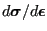
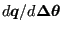

Next: Aerodynamic and hydraulic networks Up: Major routines Previous: mafillsm Contents
In subroutine results.f the dependent quantities in the finite element calculation, such as the displacements, stress, the internal forces, the temperatures and the heat flux, are determined from the independent quantities, i.e. the solution vector of the equation system. There are several modes in which results.f can be called, depending on the value of the variable iout:
Calculating the displacements and/or temperatures from the result vector only involves the use of the relationship between the location in the solution vector and the physical degrees of freedom in the nodes (field nactdof), together with SPC and MPC information.
To obtain derived quantities such as stresses and heat flux a loop over all element integration points is performed. This is first done for mechanical quantities, then for heat transfer quantities.
In the mechanical loop the strain is determined from the displacements. For linear geometric calculations this is the infinitesimal strain, else it is the Lagrangian strain tensor [19]. For certain materials (e.g. the user defined materials) the deformation gradient is also determined. Then, materialdata_me.f is called, where the material data are obtained for the integration point and actual temperature (such as Young's modulus, thermal strain etc.). A subsequent call to mechmodel.f determines the local material gradient ( ) and the stress. From this the internal forces can be calculated.
The heat transfer loop is very similar: after calculation of the thermal gradient, the material data are interpolated in materialdata_th.f, the heat flux and tangent conductivity matrix ( ) are determined in thermmodel.f and the concentrated internal heat vector is calculated.
The tangent material matrices determined in mechmodel.f and thermmodel.f are stored for further use in the construction of the element stiffness matrices (cf. mafillsm.f). An overview of the subroutine structure to calculate the stress and tangent material matrices and any related quantities is shown in Figure 172.
Notice that the stresses and heat flux determined so far was calculated in the integration points. In the last part of results.f these values are extrapolated to the nodes, if requested by the user.